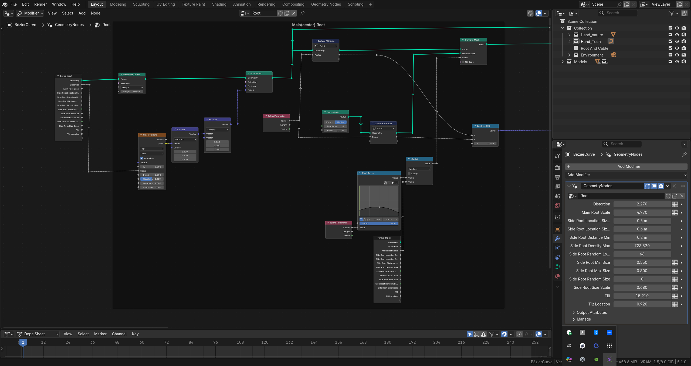
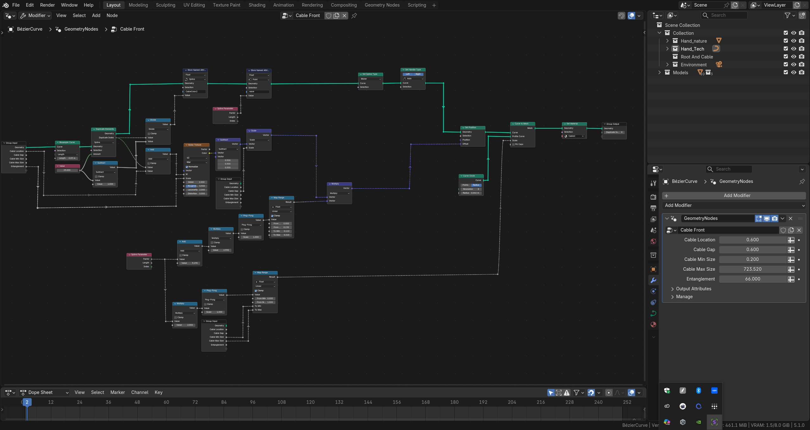

3D Modeling
Entanglement
Blender - A 3D scene created in Blender, using Geometry Nodes to build procedural forms and structures.
Role
3D Modeling
Tools
Blender
Status
Completed
Focus
Geometry Nodes
Credits
Individual Project
Duration
Dec 2025 - Oct 2025

Overview
This project is a 3D scene created in Blender, using Geometry Nodes to build procedural forms and structures. It explores how procedural workflows can be used to create complex spatial compositions while maintaining flexibility during iteration.
Design Goal
The goal of this project is to explore how Geometry Nodes can be used for procedural generation in scene building, allowing forms, density, and structure to be adjusted more efficiently through parameters.
Details



